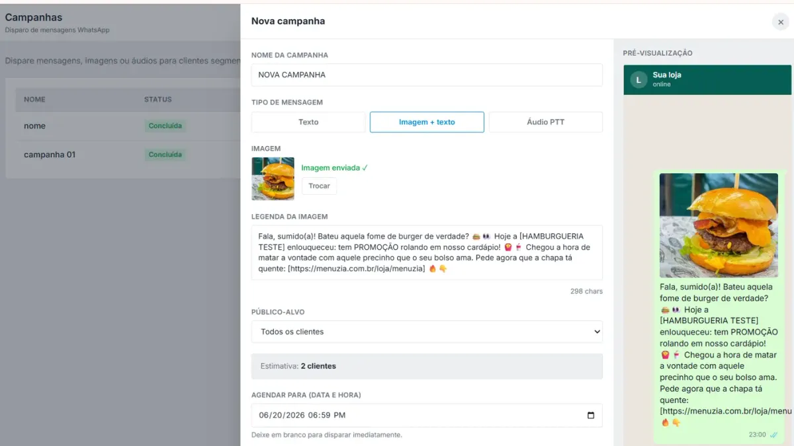

CRM para restaurante: saiba quem compra de você e traga o cliente de volta

Se o seu principal canal fosse fechar amanhã, para quantos clientes você conseguiria mandar uma mensagem? Muita loja vende há anos e não tem resposta, porque a relação ficou no aplicativo ou em conversas perdidas no celular. Um CRM para restaurante é a memória do negócio: quem comprou, o quê e quando.
O custo de não conhecer o cliente
- Você só nota que um cliente sumiu quando o movimento já caiu.
- Promoção vai para todo mundo, ou para ninguém.
- O melhor cliente recebe o mesmo tratamento de quem pediu uma vez.
- Se a equipe muda, o conhecimento vai junto.
Como a base se forma
Quem pede no seu cardápio digital entra na sua base com nome, telefone e histórico de compras. Você não precisa pedir cadastro em papel, e a lista passa a crescer com a operação.
Já tem clientes em planilha?
O Menuzia importa CSV de planilhas, reconhece as colunas mais comuns e padroniza telefones. Também dá para exportar a base em planilha completa ou no formato de públicos do Meta Ads, para usar em anúncios para delivery.
4 listas que todo delivery deveria ter
- Frequentes: reconheça, sem precisar dar desconto.
- Sumidos há 30 dias: a mensagem de reativação vai aqui.
- Compraram uma vez: a segunda compra é a mais difícil de conseguir.
- Maior ticket: bons candidatos para lançamentos.
Da informação para o pedido
- Disparos segmentados: veja disparo no WhatsApp, no plano Completo.
- Fidelidade e cupons: veja programa de fidelidade.
- Crédito para a próxima compra: veja cashback para delivery.
Respeite os dados
Nome e telefone são dados pessoais. Use-os para falar sobre sua loja, dê opção de sair da lista, não compre listas e limite o acesso da equipe. Em caso de dúvida sobre a LGPD, consulte um profissional.
Quanto custa
A base de clientes vem com o plano Básico, R$97/mês. Disparos entram no Completo, R$149/mês. Sem comissão por pedido.
Buscas relacionadas
O que donos de restaurante e delivery pesquisam antes de contratar — cada busca leva para a página que responde a ela:
Perguntas frequentes
O que é CRM para restaurante?
É a organização dos dados dos clientes, como contato e histórico de compras, para vender melhor e trazer quem sumiu de volta.
Os dados dos clientes são meus?
Sim. A base do seu canal próprio fica com você e pode ser exportada em planilha.
Consigo importar minha lista atual?
Sim. O Menuzia importa arquivos CSV, inclusive exportados do Excel, e padroniza os telefones.
Clientes do iFood entram na base?
A base é formada principalmente pelos pedidos do seu canal próprio. Por isso vale levar a recompra para o seu link.
Posso usar a base em anúncios?
Sim. A exportação tem um formato próprio para públicos do Meta Ads.
Fale com um especialista do Menuzia
Sem comissão por pedido e sem fidelidade. Planos a partir de R$97/mês, com configuração feita pela nossa equipe.
Quero conhecer o Menuzia →